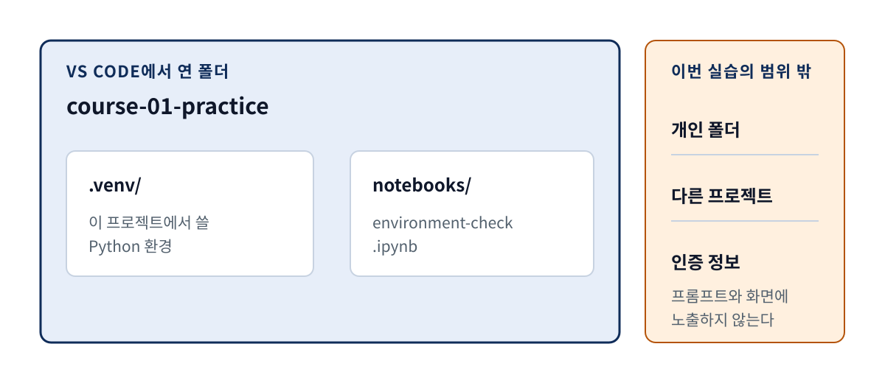
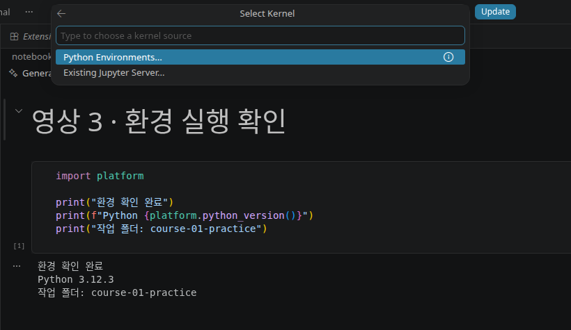
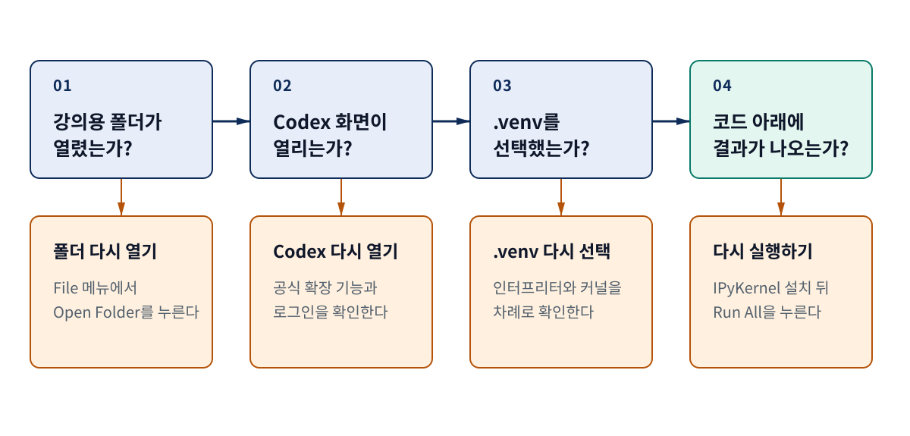

강의 상세 리포트
VS Code에 Codex 확장 기능을 설치하고 실습 환경을 만든다
강의 폴더를 연 순간부터 노트북 셀의 실행 결과가 나올 때까지
설치는 네 가지 화면 증거가 이어질 때 끝난다
프로그램 이름보다 완료 상태를 먼저 기억한다
이 차시의 목적은 설치 목록을 외우는 데 있지 않다. 다음 영상에서 코딩 에이전트에게 일을 맡겼을 때 설치 문제와 코드 문제를 구분할 수 있는 공통 작업 환경을 만드는 데 있다. 따라서 각 구성 요소마다 “설치됨” 표시가 아니라 눈으로 확인할 수 있는 통과 증거를 남긴다.

| 구성 요소 | 준비 중인 상태 | 이 차시의 통과 증거 |
|---|---|---|
| VS Code | 프로그램이 열린다 | 탐색기 맨 위에 COURSE-01-PRACTICE가 보인다 |
| Codex | 확장 기능이 설치됨으로 표시된다 | 로그인 뒤 현재 폴더와 함께 새 Codex Agent 입력창이 열린다 |
| Python | 컴퓨터에서 python 또는 python3가 실행된다 |
VS Code의 인터프리터로 작업 폴더 안 .venv가 선택된다 |
| Jupyter | .ipynb 파일이 열린다 |
같은 .venv 커널을 고르고 셀을 실행해 출력이 보인다 |
이 네 증거는 AIML Quant가 이번 입문 실습을 위해 정한 학습용 점검 기준이다. 모든 개발 환경의 보편적인 표준은 아니며, 이 점검을 통과했다고 코드 정확성이나 투자 결과가 보장되는 것도 아니다.
이 영상에서는 Codex CLI, Python 문법, 가격 데이터 공급자, KODEX 200 노트북 생성은 다루지 않는다. 실제 가격 파일과 노트북을 만드는 일은 환경이 준비된 다음 영상에서 시작한다.
본편의 기준 환경을 고정하면 화면 차이를 줄일 수 있다
버전은 권장 순위가 아니라 재현 좌표다
설치 화면은 운영체제와 업데이트 시점에 따라 달라진다. 이 리포트와 뒤의 화면 녹화는 아래 환경을 본편 기준으로 삼는다. 이 숫자는 “가장 좋은 버전”이라는 뜻이 아니라, 어떤 화면에서 확인했는지 다시 찾을 수 있게 하는 좌표다.
VS Code 1.122.1
작업 폴더의 .venv
26.820.60940 · 2026.4.0 · 2025.9.1
VS Code는 공식 다운로드 페이지에서 운영체제에 맞는
설치 파일을 받을 수 있다. Python은 python.org 다운로드 페이지
또는 운영체제의 공식 패키지 경로를 사용한다. 화면이 본편과 조금 달라도 아래의 폴더명,
확장 기능 식별자, 선택된 .venv, 셀 출력이 같으면 통과한 것으로 본다.
| 운영체제 | Python 명령에서 자주 보이는 차이 | 이 리포트에서 같은 기준으로 보는 것 |
|---|---|---|
| Windows | py 또는 python |
VS Code가 작업 폴더의 .venv를 선택했는가 |
| macOS | python3 |
같은 .venv가 인터프리터와 커널에 보이는가 |
| Linux | python3; 배포판에 따라 venv 패키지가 따로 필요할 수 있음 |
같은 .venv로 확인 셀을 실행했는가 |
Python 공식 문서는 venv가 기본 Python 위에 프로젝트별로 격리된 패키지 공간을 만든다고
설명한다. 가상 환경은 보통 프로젝트 안의 .venv 폴더에 두고, 다른 컴퓨터로 복사하기보다
필요할 때 다시 만드는 대상으로 본다
(Python venv 공식 문서).
강의 전용 폴더를 먼저 열어야 작업 범위가 보인다
빈 폴더 하나가 뒤 실습의 기준점이 된다
먼저 파일 탐색기에서 course-01-practice라는 빈 폴더를 만든다. VS Code에서 File → Open
Folder를 선택해 이 폴더를 연다. 왼쪽 탐색기 맨 위에 폴더명이 보이면 작업 위치를 정한
것이다. 신뢰 여부를 묻는 화면이 나오면 내가 직접 만든 빈 폴더가 맞는지 경로를 확인한 뒤
진행한다.

환경 확인이 끝나면 폴더 안에는 다음 정도만 있으면 된다.
course-01-practice/
├── .venv/
└── notebooks/
└── environment-check.ipynb
.venv는 Python과 패키지를 담는 실행 환경이고, environment-check.ipynb는 환경 연결만
검사하는 작은 노트북이다. 뒤 영상에서 사용할 data/ 폴더와 KODEX 200 파일은 아직 만들지
않는다. 이렇게 시작점을 비워 두면 다음 영상에서 새로 생긴 파일을 바로 구분할 수 있다.
작업 폴더를 먼저 여는 이유는 Codex에도 중요하다. OpenAI의 IDE 문서는 프로젝트를 연 뒤 현재 편집기 문맥으로 첫 대화를 시작하도록 안내한다 (Codex IDE 확장 기능 공식 문서). 폴더를 여러 개 동시에 열기보다 입문 실습에서는 강의 폴더 하나만 열어 작업 범위를 눈에 보이게 한다.
Codex는 게시자와 식별자를 확인한 뒤 새 작업 화면까지 연다
이름이 비슷한 확장 기능 대신 공식 식별자를 찾는다
VS Code 왼쪽의 Extensions를 열고 @id:openai.chatgpt를 검색한다. 상세 화면에서 게시자가
OpenAI, Identifier가 openai.chatgpt인지 확인한 뒤 설치한다. OpenAI 공식 문서가
연결하는 Visual Studio Marketplace의 Codex 페이지도 같은 식별자와 게시자를 사용한다
(Codex 공식 Marketplace 페이지).
OpenAI, 식별자 openai.chatgpt, 캡처 시점 버전 26.820.60940을 확인했다. 확장 기능은 이후 자동으로 업데이트될 수 있다.
설치 뒤 Codex 아이콘을 선택한다. 아이콘이 보이지 않으면 Command Palette에서 Codex: Open Codex Sidebar를 실행할 수 있다. 이어 ChatGPT 계정으로 로그인한다. OpenAI가 안내하는 시작 순서도 설치 또는 활성화, Codex 열기, 프로젝트에서 첫 대화 시작의 세 단계다 (Codex IDE 확장 기능 공식 문서).
로그인 과정에는 브라우저, 이메일, 다중 인증 화면이 나타날 수 있다. 비밀번호나 인증 코드는 강의 화면에 입력하지 않고, 녹화도 잠시 멈춘다. 로그인 뒤에는 Command Palette에서 Codex: New Codex Agent를 열어 빈 입력창으로 돌아온다.
COURSE-01-PRACTICE와 빈 Agent 입력창이 같이 보이며 계정 정보와 이전 대화는 화면에서 제외했다. 같은 화면의 위·아래 확인 지점을 이어 붙이고 내용이 없는 중앙 영역은 생략했다.
이 화면에서는 아직 파일을 바꾸게 하지 않는다. 입력창이 열리고 작업 폴더명이 함께 보이면 Codex 단계의 통과 증거는 충분하다. 다음 영상에서 구체적인 작업 요청과 변경 검토를 시작한다.
Python 인터프리터와 노트북 커널은 각각 선택한다
같은 .venv를 가리켜야 실행 환경이 어긋나지 않는다
VS Code의 Python 확장 기능과 Jupyter 확장 기능은 역할이 다르다. Microsoft의 Python 확장
기능은 Python 코드 실행, 디버깅, 언어 지원과 환경 관리를 연결한다
(Python 확장 기능 공식 페이지).
Jupyter 확장 기능은 .ipynb 노트북 편집과 커널 연결을 맡는다
(Jupyter 확장 기능 공식 페이지).
Extensions에서 게시자 Microsoft의 Python과 Jupyter를 설치한다. Command Palette에서
Python: Create Environment → Venv를 선택하고 컴퓨터에 설치된 Python을 고르면 작업
폴더에 .venv를 만들 수 있다. 터미널을 사용할 경우 운영체제에 맞춰 다음처럼 만들 수 있다.
Windows: py -m venv .venv
macOS/Linux: python3 -m venv .venv
가상 환경을 만든 뒤 Python: Select Interpreter에서 .venv를 선택한다. VS Code 공식
문서에 따르면 이 선택은 코드 실행, 디버깅, IntelliSense 같은 Python 기능에 사용된다
(VS Code Python 환경 공식 문서).
.venv를 가리키게 하는 구조. 한쪽을 선택했다고 다른 쪽의 선택까지 항상 끝났다고 보지 않는다.
새 .ipynb 파일을 열면 오른쪽 위 Select Kernel을 누른다. Python Environments를
선택한 뒤 .venv를 고른다. VS Code의 커널 관리 문서는 Python 환경이 커널 목록에 나타나며,
노트북에서 Python 프로세스를 실행하려면 그 환경에 IPyKernel이 필요하다고 설명한다
(Jupyter 커널 관리 공식 문서).
.venv를 고른다. 캡처에는 개인 컴퓨터의 다른 Python 환경 목록을 포함하지 않았다.
.venv에 IPyKernel이 없다는 안내가 나오면 VS Code가 제안하는 설치를 진행하거나, 선택한
가상 환경의 터미널에서 python -m pip install ipykernel을 실행한다. Jupyter 전체를 같은
환경에 설치해야만 하는 것은 아니며, VS Code 공식 문서는 Python 커널 실행에 IPyKernel만
필요하다고 안내한다.
확인용 셀의 출력이 보여야 다음 실습으로 넘어간다
코드 한 셀로 폴더와 Python과 커널을 함께 확인한다
notebooks/environment-check.ipynb를 만들고 다음 셀을 넣는다. 이 코드는 Python 문법을
가르치려는 예제가 아니라, 선택한 커널이 실제로 실행되는지 확인하는 작은 점검 장치다.
import platform
print("환경 확인 완료")
print(f"Python {platform.python_version()}")
print("작업 폴더: course-01-practice")
오른쪽 위에 .venv와 Python 버전이 보이는지 확인하고 Run All을 누른다. 셀 왼쪽에
실행 번호가 생기고 아래에 세 줄의 출력이 나타나면 커널이 동작한 것이다.
.venv (3.12.3) 커널로 실제 실행한 결과. 상단의 커널명, 셀의 성공 표시, 출력 세 줄을 함께 확인한다.
COURSE-01-PRACTICE가 탐색기 맨 위에 보인다.
게시자 OpenAI와 openai.chatgpt를 확인했다.
로그인 뒤 새 Agent 입력창을 열었다.
작업 폴더의 .venv를 선택했다.
같은 .venv가 오른쪽 위에 보인다.
Run All 뒤 오류 없이 세 줄이 출력된다.
여섯 항목이 모두 보이면 다음 영상의 시작점이 마련됐다. 이 확인용 노트북은 가격 데이터나 전략을 다루지 않는다. 셀이 실행됐다는 사실은 Python 환경이 연결됐다는 뜻일 뿐, 금융 데이터가 정확하거나 전략이 수익성 있다는 뜻은 아니다.
문제가 생기면 처음 실패한 층으로 돌아간다
모든 것을 다시 설치하기 전에 실패 위치를 찾는다
노트북 셀이 실행되지 않을 때 프로그램을 전부 지우고 다시 설치하면 원인을 알기 어렵다. 왼쪽 탐색기부터 시작해 Codex, 커널, 셀 순서로 화면 증거를 확인한다. 처음 보이지 않는 증거가 문제를 찾을 출발점이다.

| 증상 | 먼저 확인할 것 | 다음 행동 |
|---|---|---|
| 탐색기에 강의 폴더명이 없다 | 빈 창이나 다른 폴더를 열었는가 | File → Open Folder로 course-01-practice를 다시 연다 |
| Codex 화면이 열리지 않는다 | OpenAI 게시자와 식별자가 맞는가 | @id:openai.chatgpt를 확인하고 Codex 열기 명령을 실행한다 |
.venv가 커널 목록에 없다 |
가상 환경이 실제로 만들어졌는가 | Python 인터프리터를 다시 선택하고 환경 목록을 새로 고친다 |
| 셀 실행이 시작되지 않는다 | 커널명과 IPyKernel 준비 상태 | .venv를 다시 고르고 IPyKernel 안내를 확인한다 |
| 셀이 오류로 끝난다 | 오류 메시지의 첫 줄과 선택한 커널 | 코드보다 먼저 다른 Python이 선택되지 않았는지 대조한다 |
리포트의 그림 2, 3, 4, 6, 7은 뒤 통합 영상에서도 같은 확인 지점으로 사용한다. 슬라이드는
단계의 이유와 통과 기준을 설명하고, 실제 클릭과 실행은 짧은 화면 녹화로 보여 준다. 최종
본편은 설명 슬라이드 → 실제 화면 → 통과 기준의 흐름으로 조립하므로, 학습자는 화면을
따라가면서도 지금 무엇을 확인하는지 놓치지 않는다.
용어와 재현 근거
핵심 용어
| 용어 | 이 리포트에서의 뜻 |
|---|---|
| 작업 폴더 | 이번 실습 파일을 모으고 VS Code에서 하나의 작업공간으로 연 폴더 |
| 확장 기능 | VS Code에 Codex, Python, Jupyter 같은 기능을 더하는 설치 단위 |
| Python 인터프리터 | .py 코드 실행과 편집 지원에 사용할 Python 실행 환경 |
| 가상 환경 | 프로젝트별 Python과 패키지를 분리해 두는 폴더. 이 차시에서는 .venv |
| 노트북 커널 | .ipynb 셀을 실제로 실행하고 결과를 돌려주는 프로세스 |
| IPyKernel | Python 환경을 Jupyter 노트북 커널로 실행하게 하는 패키지 |
화면 캡처는 어떻게 재현했는가
화면 자료는 Ubuntu 24.04.4 LTS의 별도 VS Code 사용자 데이터·확장 기능 디렉터리와
course-01-practice 임시 폴더에서 재현했다. VS Code 공식 CLI 문서가 설명하는
--user-data-dir과 --extensions-dir을 사용해 기존 편집기 설정과 확장 기능 목록을 분리했다
(VS Code CLI 공식 문서).
다만 별도 사용자 데이터 디렉터리만으로 제품 계정의 인증 상태와 대화 기록까지 분리된다고
가정하지 않았다. 실제 픽셀을 확인해 계정 이메일, 이전 대화, 개인 경로가 나타난 프레임은
폐기했다. 노트북은 .venv의 Python 3.12.3과 IPyKernel로 실행했고, VS Code에서 같은 커널을
선택한 뒤 Run All을 다시 눌러 그림 7의 출력을 확인했다.
외부 1차 자료에서 확인한 내용
| 자료 | 이 리포트에서 확인한 내용 |
|---|---|
| OpenAI, Codex IDE 확장 기능 공식 문서 | VS Code에서 Codex 확장 기능을 설치 또는 활성화하고, Codex 화면을 연 뒤 프로젝트 문맥으로 첫 대화를 시작하는 공식 순서 |
| Visual Studio Marketplace, Codex 공식 확장 기능 | 공식 게시자 OpenAI, 확장 기능 식별자 openai.chatgpt, ChatGPT 계정 로그인 안내 |
| Microsoft, VS Code 다운로드 | Windows·macOS·Linux별 VS Code 공식 설치 파일 경로 |
| Microsoft, Python 환경 관리 | Python: Select Interpreter에서 선택한 환경이 코드 실행·디버깅·언어 기능에 사용된다는 점 |
| Microsoft, Jupyter 커널 관리 | 노트북의 Select Kernel에서 Python 환경을 고르며 Python 커널 실행에는 IPyKernel이 필요하다는 점 |
| Microsoft, Jupyter 노트북 | .ipynb 파일 생성, 오른쪽 위 커널 선택, 셀 실행으로 이어지는 공식 노트북 흐름 |
Python Software Foundation, venv 공식 문서 |
프로젝트별로 격리된 Python 패키지 환경을 만들고 .venv 같은 디렉터리에 두는 방식 |
| Microsoft, VS Code CLI | 별도 사용자 데이터와 확장 기능 디렉터리로 재현용 VS Code 인스턴스를 분리하는 옵션 |
이 리포트의 여섯 항목 점검표와 오류 확인 순서는 위 제품 문서의 문장을 그대로 옮긴 표준이 아니다. 코딩 경험이 없는 투자자가 다음 실습 전에 빠진 환경을 찾도록 AIML Quant가 구성한 학습용 기준이다. 제품 화면과 버전은 바뀔 수 있으므로 실제 녹화 직전에 공식 문서, 설치된 버전, 버튼 이름을 다시 확인한다.